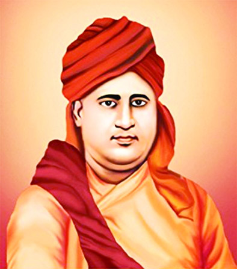

He spent his childhood in luxury, and his family, that was an ardent follower of Lord Shiva, had started grooming him in various Brahmanical rituals, piety, and purity, and the importance of fasting from a very early age. When he was only eight years old, the ceremony of ‘Yajanopavita Sanskara‘ was performed and thus he was formally inducted into the world of Brahmanism.
By age of 14, he had learned by heart the Yajurveda, the scriptures, and the Upanishads. He had become a respected figure in his locality and has started reciting religious verses and taking part in religious debates.
Once, on the occasion of Mahashivaratri, his father asked him to fast and worship Lord Shiva according to rituals by observing the nightly fast. According to the father’s instructions, Moolshankar followed the fast and fasted for the whole day, and for the night awakening, he sat in the Shiva temple with a palanquin. At midnight, he saw a scene in the temple, in which a swarm of rats surrounded the idol of God and were eating all the prasad.
Then the question arose in the mind of Moolshankar Ji, this idol of God is really a stone rock that cannot protect itself, what can we expect from it? That one incident made a huge impact in the life of Moolshankar, and he left his home for the attainment of self-knowledge and through knowledge, he was named Maharishi Dayanand Saraswati from Moolshankar Tiwari.
Swami Dayanand Saraswati was born as Mool Shankar Tiwari, on the tenth day of the waning moon in the month of Purnimanta Falguna, 12 February 1824 in Tankara, Gujarat. His father Karshanji Lalji Kapadi was a rich man, so there was no shortage of money in the family.
Also, the deaths of his younger sister and his uncle from cholera caused Dayanand to ponder the meaning of life and death. He began to ask questions which worried his parents. He was engaged in his early teens, but he decided not to marry and ran away from home in 1846. He had a strong desire to know the truth of life, due to which he was seen as meaningless in worldly life.
Dayananda Saraswati spent nearly twenty-five years wandering ascetic, searching for religious truth. He gave up material goods and lived a life of self-denial, devoting himself to spiritual pursuits in forests, retreat in the Himalayan mountains, and pilgrimage sites in northern India.
Dayananda Saraswati spent nearly twenty-five years wandering ascetic, searching for religious truth. He gave up material goods and lived a life of self-denial, devoting himself to spiritual pursuits in forests, retreat in the Himalayan mountains, and pilgrimage sites in northern India.
Contribution To The Revolt Of 1857
After leaving the house in 1846, he first started speaking against the British, during his tour of the country, he found that among the people there is anger against the British rule, they just need proper guidance, so he worked to collect the people against Britishers.
The great heroes of that time were also influenced by Swamiji, among them were Tatya Tope, Nana Saheb Peshwa, Haji Mulla Khan, Bala Saheb, etc. These people worked according to Swamiji. After making the people aware, everyone was made the message bearer, so that mutual relations were formed and solidarity came.
For this work, he also prepared the Roti and Kamal scheme and started connecting all for the independence of the country. He first connected the saints so that through them, the common people can be motivated for freedom.

Although the revolution of 1857 failed, Swami Ji did not have any feelings of despair. He explained this to everyone. He believed that many years of slavery could not be met through a struggle, for this it may still take the same amount of time as slavery has been cut.
He assured that it is time to be happy because the freedom struggle has started on a large scale and the country will be free in the coming tomorrow. His thoughts kept the spirits of the people alive. After this revolution, Swamiji went to his Guru Virjanand and started acquiring Vedic knowledge and communicated new ideas in the country. On the guidance of his Guru, Swamiji did the work of social salvation.
Swami Virajananda:The Guru Of Swamiji
At last, he arrived at Mathura where he met Swami Virajananda. Mool Shankar became his disciple and Swami Virajananda directed him to learn directly from the Vedas. He found all his questions regarding life, death, and the afterlife answered during his study. Swami Virajananda entrusted Mool Shankar with the task of spreading Vedic knowledge throughout society and rechristened him as Rishi Dayanand.
After getting guidance from the Guru, Swami Dayanand Saraswati started touring the entire nation and spreading the knowledge of Vedic scriptures. He faced many adversities, was humiliated, but never changed his course. He studied the original texts of all religions and openly opposed the evils prevailing in them. They were opposed to Christianity, Muslim religion, and Sanatan religion as well, they considered the knowledge contained in the Vedas to be paramount and certified. He established the Arya Samaj with his core values.
He left his master in 1863, and visited Agra, Gwalior, Jaipur, Pushkar, Ajmer, Haridwar, Benaras, and several other places holding discussions with pandits, and fearlessly criticizing orthodoxy and scholastically denouncing idolatry. It was at Bombay (now Mumbai) that his mission took a definite shape in the form of his classical book – Satyarth Prakash – published in early 1875 and the founding of Arya Samaj on April 10, 1875.
Spiritual Beliefs
Maharishi Dayanand was a believer in Hinduism just as the Vedas have outlined, devoid of any corruption and embellishments. Preserving the purity of the faith was of utmost importance to him. He strongly advocated the concepts of Dharma which he believed to be free from any partiality and as an embodiment of truthfulness. To him, Adharma was anything that did not hold true, was not just or fair, and was opposed to the teachings of the Vedas.
He believed in the reverence of human life irrespective of anything and condoned the practice of Ahimsa or non-violence. He advised his countrymen to direct their energy towards the betterment of mankind as a whole and not waste away in unnecessary rituals.
He revoked the practice of idol worship and considered them contamination introduced by the priesthood for their own benefit. He was against other social evils like superstitions and caste segregation. He advocated the concept of Swarajya, meaning a country free of foreign influence, resplendent in the glory of fair and just participants.
Child Marriage Opposition

At that time, the practice of child marriage was prevalent everywhere, everyone was glad to follow it. Then Swamiji aroused the people against this practice through the scriptures, he clarified that it is mentioned in the scriptures that 25 years of advancement in human life is of Brahmacharya according to which child marriage is a misdeed. He said that if a child is married, that person becomes weak and due to weakness, premature death occurs.
Tradition Of Sati
He also opposed the inhuman practice of devoting fire to the wife along with the husband on his death bed and taught mankind a sense of love and respect. Gave a message of charity.
Message Of Unity

Dayanand Saraswati had a dream which is incomplete to date, he wanted to see all religions and his followers sitting under the same flag. He believed that the benefits of the mutual fight are always taken by the third, so it is necessary to remove this distinction. For which he led many meetings but he could not put Hindu, Muslim, and Christian religions in one garland.
Establishment Of Arya Samaj
On 7th April 1875, he founded the Arya Samaj in Mumbai on the day of Gudi Padwa. The main religion of the Arya Samaj was human religion. He described philanthropy, human service, deeds, and knowledge as the main basis whose purpose was mental, physical, and social progress. With such thoughts, Swamiji laid the foundation of the Arya Samaj, which inspired many great scholars. Many opposed Swamiji but no one could stand before his logical knowledge. Big scholars, pundits had to bow before Swamiji. Similarly, in the darkness of superstition, the feeling of Vedic light was started for everyone.
Assassination Attempts
The British government had started to fear Swami Ji. Swamiji’s statement had a profound effect on the country, which he was seeing as his defeat, so he started constant monitoring of Swamiji. Swamiji never gave up in front of British rule and his officer. Rather, he was subjected to sarcasm on the face due to which the British government began to doubt the power of self in front of Swamiji, and due to this, he started trying to assassinate him. Swami Ji was poisoned many times but Swami Ji was proficient in yoga and therefore nothing happened to him.
Assassination
In 1883 Swami Dayanand Saraswati went to the Maharaj of Jodhpur. King Yashwant Singh received him with great respect. Heard many of his lectures. One day when King Yashwant was busy with a court dancer, Swamiji saw all this and opposed it and in a calm voice explained to Yashwant Singh that on one hand you want to join a religion and on the other hand there are hugs with such luxury, in such a way it is impossible to get knowledge.
Swamiji’s words had a deep impact on Yashwant Singh and he ended his relationship with his dancer. Due to this, the dancer felt offended and became angry with Swamiji, and together with the cook, he mixed pieces of glass in Swamiji’s food, which made Swamiji’s health very bad. Later the cook confessed his guilt and Dayananda forgave him. He became bed-ridden and after several days of pain and suffering, he died on the morning of 30 October 1883 in Mount Abu.
Legacy Of Swami-Dayanand-Saraswati
Today, the Arya Samaj is very active not only in India but also in other parts of the world. The United States, Canada, Trinidad, Mexico, United Kingdom, Netherlands, Kenya, Tanzania, Uganda, South Africa, Malawi, Mauritius, Pakistan, Burma, Thailand, Singapore, Hong Kong, and Australia are some of the countries where the Samaj has its branches.
Although Maharishi Dayanand and the Arya Samaj were never involved in the Indian Independence Struggle directly, his life and his teachings had considerable influence on several important personalities like Lala Lajpat Rai, Vinayak Damodar Savarkar, Madam Cama, Ram Prasad Bismil, Mahadev Govind Ranade, Madan Lal Dhingra, and Subhash Chandra Bose. Shaheed Bhagat Singh was educated at the D.A.V. School in Lahore.
He was a universally revered figure and American Spiritualist Andrew Jackson Davis called Maharishi Dayanand “Son of God“, admitting that he had exerted a profound effect on his spiritual beliefs and applauded him for restoring the status of the Nation.